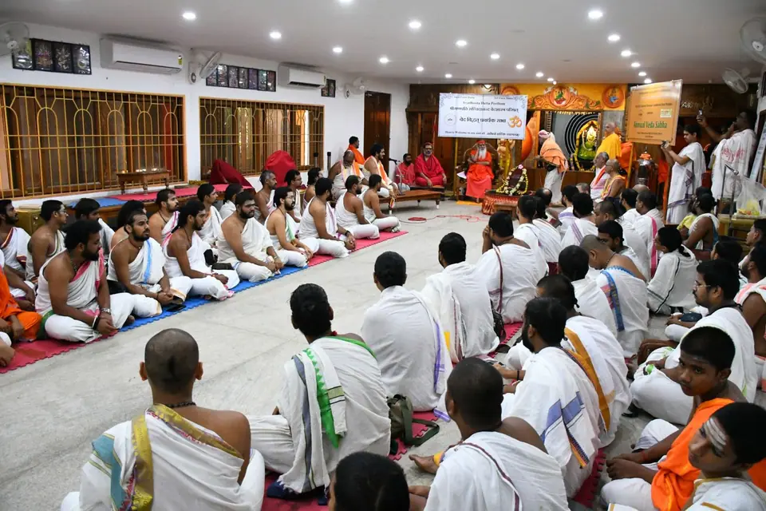
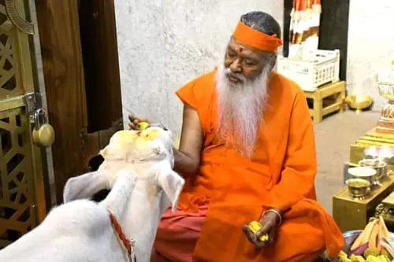
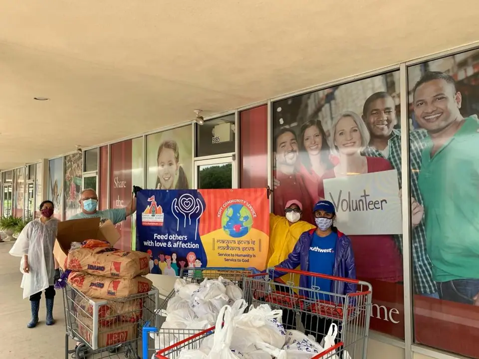
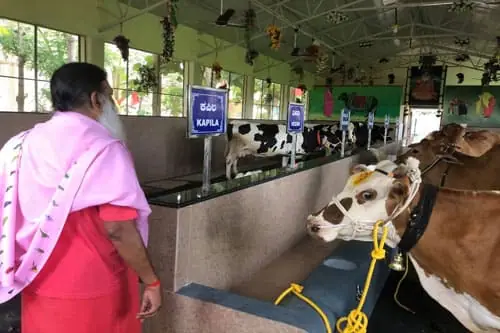
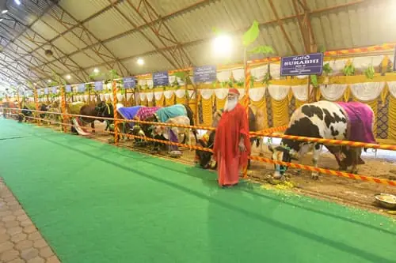
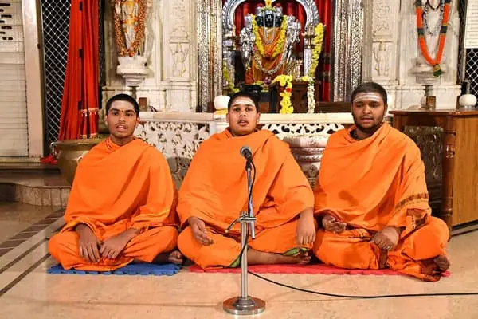
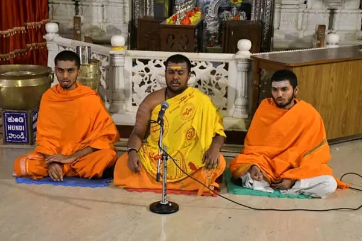
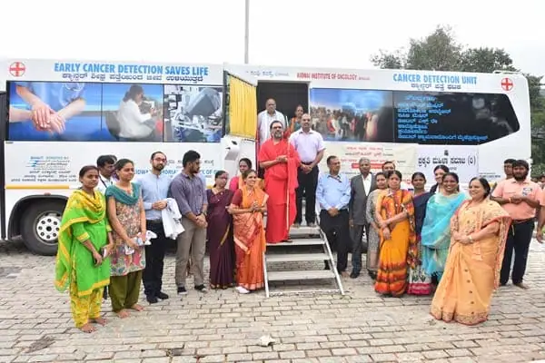

వేద అధ్యయనం
నాలుగు వేదాలు, ఐదు శాఖలు, రెండు వేదాల స్మార్తం, తర్క వేదాంత శాస్త్రాలు. శుక్ల యజుర్వేద కాణ్వ శాఖను 2018లో చేర్చారు.

గోశాల, వేద పాఠశాల నుంచి ఎస్జీఎస్ ఆసుపత్రి, నిత్య అన్నదానం, శుక వనంలోని పక్షుల వరకు — కులం, విశ్వాసం, జాతి, మతం అనే అడ్డుగోడలు లేకుండా పీఠం మానవాళికి సేవ చేస్తోంది.
అవధూత దత్త పీఠం అవసరార్థులకు వైద్య, విద్యా, వృత్తి శిక్షణ, ఆధ్యాత్మిక సేవలు అందిస్తోంది. ఇక్కడి కరుణ గోవులు, పిల్లలు, రోగులు, పక్షులు — అందరినీ సమానంగా చేరుతుంది.






మానవులకు చేసే సేవ అంటే భగవంతునికి చేసే సేవే.
శ్రీ స్వామీజీఆధ్యాత్మిక జీవితంలో అవసరార్థులకు సేవ చేయడం కూడా భాగమేనని శ్రీ స్వామీజీ వారు నొక్కి చెబుతారు. కర్మ యోగ అని పిలిచే ఈ సాధన అంటే నిస్వార్థంగా కర్మలు చేస్తూ, వాటి ఫలాలను భగవంతునికి సమర్పించడం.



సృష్టిలో కామధేను, కల్పవృక్షం, అమృతంతో పాటు లక్ష్మీ దేవి కూడా దైవత్వానికి అత్యంత వైభవోపేతమైన ప్రతిరూపాలుగా ఒకేసారి ఆవిర్భవించారు. సకల దేవతలు గోవులోనే కొలువై ఉంటారని శాస్త్రాలు ప్రకటిస్తున్నాయి; అందుకే సనాతన ధర్మం గోవును గోమాతగా పూజిస్తుంది.
శ్రీ స్వామీజీ వారు మైసూరు ఆశ్రమంలో ఒక పెద్ద గోశాలను స్థాపించారు; అక్కడ 50కి పైగా గోవులకు ఆశ్రయమిచ్చి సంరక్షిస్తున్నారు. ఇతర శాఖలలో కూడా గోశాలలను నిర్వహిస్తున్నారు.

1985లో స్థాపించిన శ్రీ గణపతి సచ్చిదానంద వేద పాఠశాల సంప్రదాయ గురుకుల పద్ధతిలో నాలుగు వేదాలనూ, సంస్కృతాన్నీ బోధిస్తోంది — యువ విద్యార్థులను సజీవ వైదిక సంప్రదాయంలో తీర్చిదిద్దుతూ, ఆధునిక ప్రపంచానికి కూడా సన్నద్ధం చేస్తోంది.
మైసూరు ఆశ్రమంలో సుమారు 120 మంది విద్యార్థులు వేద విద్య అభ్యసిస్తున్నారు; ఆంధ్రప్రదేశ్లోని పిఠాపురం, జయలక్ష్మీపురం (బొమ్మేపర్తి)లలో కూడా పీఠం వేద పాఠశాలలను నిర్వహిస్తోంది. సంస్కృతం ఒక భాష కాదు, ఒక “భావం” — ఒక అనుభూతి అని శ్రీ స్వామీజీ వారు సెలవిస్తారు. ఉత్తరాధికారి శ్రీ బాల స్వామీజీ వారు కూడా ఈ పాఠశాల పూర్వ విద్యార్థులే.
నాలుగు వేదాలు, ఐదు శాఖలు, రెండు వేదాల స్మార్తం, తర్క వేదాంత శాస్త్రాలు. శుక్ల యజుర్వేద కాణ్వ శాఖను 2018లో చేర్చారు.

భగవంతునితో అనుసంధానం కోసం నిత్య అనుష్ఠానాలు, ధ్యానం, మంత్రోచ్చారణ. క్రమం తప్పకుండా వేద పారాయణాలు జరుగుతాయి; అర్చక శిక్షణ కేంద్రం విస్తృత సమాజానికి సేవలందిస్తోంది.

ఆధునిక విషయాలతో కూడిన సమతుల్య పాఠ్యప్రణాళిక. ఆధునిక విద్యా శాఖలను అభ్యసిస్తూనే వేద జ్ఞానాన్ని ఆస్వాదించమని శ్రీ స్వామీజీ వారు విద్యార్థులకు సూచిస్తారు.
ప్రతి సంవత్సరం మే నెలలో శ్రీ స్వామీజీ వారి జన్మదినోత్సవాలకు ముందు నాలుగు వేదాలలోనూ ఈ పరీక్షలు జరుగుతాయి. దేశం నలుమూలల నుంచి విద్యార్థులు పాల్గొంటారు; ప్రతిభ కనబరిచినవారిని పీఠం సత్కరిస్తుంది.
1989లో శిథిలావస్థలో ఉన్న రెండు పాఠశాలలను పీఠం స్వీకరించి అభివృద్ధి చేసినప్పటి నుంచి ప్రీ-స్కూల్, హైస్కూల్ విద్యార్థులకు చేయూత — దీనితో పాటు పేద పాఠశాలలకు ఫర్నిచర్, మౌలిక సదుపాయాలు, మరుగుదొడ్లు.
బెంగళూరు గిరినగర్లోని ఎస్జీఎస్ ఆశ్రమం సంభాషణ లోపాలు గల పిల్లల కోసం దీనిని నిర్వహిస్తోంది: శిశు ఉద్దీపన నుంచి వృత్తి శిక్షణ వరకు రోగనిర్ధారణ, చికిత్సా సహాయం.
మైసూరు పిల్లల కోసం: శ్లోకాలు, సామాజిక బాధ్యతపై అవగాహన, ఉపన్యాసాలు, దత్త క్రియా యోగ; అతి చిన్నపిల్లలకు బాల దత్త తరగతులు.
వైదిక పరిశోధన, ప్రచురణల కోసం పీఠం నెలకొల్పిన విభాగమైన ఎస్జీఎస్ వేదనిధి అకాడమీ & మాస్టర్స్ ఇన్స్టిట్యూట్ (SVAMI)ను కర్ణాటక సంస్కృత విశ్వవిద్యాలయం ‘సెంటర్ ఆఫ్ ఎక్సలెన్స్’గా గుర్తించింది.


Sri Ganapathy Sachchidananda Hospital operates a comprehensive healthcare system within the Holistic Health Centre, providing preventive and curative care: outpatient services in Ayurveda, Allopathy, Homeopathy, Naturopathy and other systems, and Ayurvedic inpatient care.
తృతీయ స్థాయి వైద్యం కోసం లక్షల రూపాయలు ఖర్చు చేయడం కంటే ప్రాథమిక ఆరోగ్య సంరక్షణకే శ్రీ స్వామీజీ వారు ఎల్లప్పుడూ ప్రాధాన్యమిస్తారు.
ఎస్జీఎస్ ఆసుపత్రి ప్రతి నెలా 5,000–10,000 మందికి వైద్య సేవలు అందిస్తుంది. సంచార వైద్యశాల వాహనం మైసూరు చుట్టుపక్కల గ్రామాలను క్రమం తప్పకుండా సందర్శిస్తుంది; ఆసుపత్రి టీకాల కార్యక్రమం, పల్స్ పోలియో వంటి జాతీయ కార్యక్రమాలలో పాల్గొంటుంది. సమగ్ర ఆరోగ్య కేంద్రాన్ని భారత మాజీ రాష్ట్రపతి శ్రీ ఆర్. వెంకట్రామన్ గారు, అప్పటి కర్ణాటక ముఖ్యమంత్రి శ్రీ ఎస్.ఎం. కృష్ణ గారు ప్రారంభించారు.
SGS Hospital regularly conducts free medical camps for the detection and treatment of various diseases.
Regular free camps at SGS Hospital
In addition, annual free medical camps are organised for the needy during the Chaturmasya Vrata of Sri Bala Swamiji, including cancer screening for women over 40.
Chaturmasya Vrata camps, 2024
రక్తదాన శిబిరం
ఆశ్రమంలో ఒక చిన్న వైద్యశాల ప్రారంభమవుతుంది; అక్కడ సందర్శక వైద్యులు చిన్న చిన్న అనారోగ్యాలకు చికిత్స చేస్తారు.
The “Humanity Service Center” is established in a new building, now known as Manipadma Kuteera. Sri Swamiji’s timeline dates the inauguration of SGS Hospital, to provide free medical services, to 1978.
వైద్య సేవలు స్వామి నరహరి తీర్థ కాంప్లెక్స్కు విస్తరిస్తాయి; దానికి ఎస్జీఎస్ ఆసుపత్రి, సమగ్ర ఆరోగ్య కేంద్రం అని పేరు మారుస్తారు.
శ్రీ స్వామీజీ వారి 70వ జన్మ సంవత్సరంలో ఉచిత ఎస్జీఎస్ ఆసుపత్రి పాలీక్లినిక్ డే కేర్ సెంటర్ (అల్లోపతి) కొత్త భవనంలో ప్రారంభమవుతుంది.
ప్రతిరోజూ ఉచిత ఔట్పేషెంట్ సంప్రదింపులు, కౌన్సెలింగ్. దీర్ఘకాలిక వ్యాధులకు ఇన్పేషెంట్లకు పంచకర్మ, ఇతర చికిత్సలు; ఆరు ప్రత్యేక గదులు, సాధారణ వార్డులు, ‘పథ్య’ ఆహారం.
జనరల్ మెడిసిన్, పిల్లల వైద్యం, స్త్రీ వైద్యం, హృద్రోగ వైద్యం, ఎముకల వైద్యం, దంత సంరక్షణ, ఈఎన్టీ, కంటి వైద్యం, అత్యవసర చికిత్స, చిన్న శస్త్రచికిత్సలు — ఉచిత సంప్రదింపులు, కౌన్సెలింగ్, మందులతో.
ఎర్బ్స్ పాల్సీ, సెరిబ్రల్ పాల్సీ, ఆటిజం లేదా ఎదుగుదల ఆలస్యం ఉన్న పిల్లలకు, ఆరు వారాల వయసు నుంచే, ఆయుర్వేదం, ఫిజియోథెరపీలను మేళవించి పునరావాస చికిత్స.
ఎలక్ట్రోథెరపీ, వ్యాయామ చికిత్స, మర్దన, మాన్యువల్ థెరపీ; ఎముకలు విరిగిన తర్వాత, కీళ్ల మార్పిడి, లామినెక్టమీ తర్వాత పునరావాస చికిత్స.
అనుబంధ సేవలు సంగీత చికిత్స · యోగ చికిత్స · పీపుల్స్ డయాగ్నస్టిక్ సెంటర్

ఆశ్రమానికి వచ్చే ప్రతి సందర్శకునికీ రోజుకు మూడు పూటలా ఉచిత భోజనం అందించడం ఇక్కడి సంప్రదాయం. మైసూరు ఆశ్రమంలో, దాని శాఖలలో ఏటా పది లక్షల మందికి పైగా అన్నదానం జరుగుతుంది.
శ్రీ జయలక్ష్మీ మాత నిత్య అన్నదాన ట్రస్ట్ 1986లో స్థాపించబడింది. ప్రతి పౌర్ణమి (పూర్ణిమ) నాడు పీఠం అవసరార్థుల కోసం అన్నదానం కూడా నిర్వహిస్తుంది; ప్రతి మే నెలలో శ్రీ స్వామీజీ వారి జన్మదినోత్సవాల సమయంలో స్వచ్ఛంద సేవా బృందాలు మైసూరు, బెంగళూరు, హైదరాబాద్, విజయవాడ, ఇతర ప్రాంతాలలో భోజనం వడ్డిస్తాయి.

పేదలకు, అణగారిన వర్గాలకు ఆహారం, ఇతర సహాయం అందించమని శ్రీ స్వామీజీ వారు పీఠాన్ని, భారతదేశంలోనూ విదేశాలలోనూ ఉన్న దాని ఆశ్రమాలను ఆదేశించారు.
“బోన్సాయ్ వృక్షాలు, పక్షులు స్వామీజీకి రెండు కళ్ళు. నాదమే స్వామీజీ స్వరం. వేదమే స్వామీజీ శ్వాస.”
దట్టమైన అడవి మధ్యలోని మేకెదాటులో జన్మించిన శ్రీ స్వామీజీ వారికి పక్షులు, జంతువుల పట్ల సహజమైన మమకారం. ప్రతి పిల్లవాడూ, ప్రతి పెద్దవారూ ఒక్క చెట్టును కాదు, ఎన్నో చెట్లను దత్తత తీసుకోవాలని వారు ఉద్బోధిస్తారు.

సొంత పక్షుల ఆసుపత్రి గల పక్షుల పునరావాస కేంద్రం: హింసకు గురైన, గాయపడిన, వదిలివేయబడిన పక్షులకు ఆశ్రయమిచ్చే, అవి స్వేచ్ఛగా ఎగిరే, లోపలికి నడిచి వెళ్లగల పక్షిశాల. ఇద్దరు నివాస పశువైద్యులతో సహా సుమారు 70 మంది వాటిని సంరక్షిస్తున్నారు. 2018లో ప్రపంచవ్యాప్త “ఇయర్ ఆఫ్ ది బర్డ్” ప్రాజెక్టులో చేరాలని శుక వనానికి ఆహ్వానం అందింది.
Guinness World Record, 6 May 2017: most bird species in an aviary. The certificate pictured records 468 species.

శ్రీ స్వామీజీ వారు స్వయంగా పెంచి పోషించిన 450కి పైగా సూక్ష్మ వృక్షాలు ప్రాచ్య ఉద్యాన శైలిలో కొలువుదీరాయి. 21 డిసెంబర్ 2016న మైసూరు ఆశ్రమంలో జరిగిన ప్రపంచ బోన్సాయ్ సదస్సులో బోన్సాయ్ వృక్షాల అతిపెద్ద ప్రదర్శనకు గాను శ్రీ స్వామీజీ వారికి గిన్నిస్ ప్రపంచ రికార్డు లభించింది.
గిన్నిస్ ప్రపంచ రికార్డు, 2016: బోన్సాయ్ వృక్షాల అతిపెద్ద ప్రదర్శన
శ్రీ స్వామీజీ సూక్తి“జీవిత చరమాంకంలో మనకోసం ఎంత కూడబెట్టుకున్నామన్నది కాదు, లోకానికి ఎంత మేలు చేశామన్నదే ముఖ్యం!
ఇతరులు కష్టాల్లో ఉన్న సమయంలో వారికి సేవ చేయడంలోనే శాశ్వతమైన ఆనందం దాగి ఉంది!”

Sri Datta Humane Services is the volunteer corps of Avadhoota Datta Peetham, dedicated to the service of Sri Swamiji, His Ashrams and related social programmes in India and abroad.
As Sri Swamiji has made clear many times, Humanity is His Religion, Music is His Language and Devotion is His methodology. SDHS and the Datta Senas volunteer groups have received state and national awards.
The four pillars of strength
Free check-ups, Pulse-Polio drives, blood donation camps, and stretchers and support equipment for the differently abled.
Scholarships, school supplies and infrastructure for students from economically weaker sections.
Relief materials and rehabilitation during natural calamities such as floods, earthquakes and pandemics.
Tree-plantation drives, cleanliness campaigns and awareness programmes on conservation.
Care for abandoned and injured animals through shelters and veterinary services.
Service to pilgrims during major socio-religious community events.

Follow Sri Datta Humane Services on Facebook for news of seva activities and camps.
Call +91 (0821) 2486 486 or write to mail@dattapeetham.com to offer your seva.
SDHS camps appear on the Peetham calendar — the next listed is at Vishwaroopa Datta Kshetra, Ganagapura, 15–17 December 2026.
Your offering sustains Annadana, Gau Seva, the Veda Pathashala, free medical care and the birds of Shuka Vana. Donations are made on the Peetham’s own system at dattapeetham.org, where you choose the fund to support.
On the donation page, choose INR (₹) if you have an Indian residential address, or USD ($) if you live outside India. The Sri Jayalakshmi Matha Nitya Annadana Trust accepts INR only. You can also give on behalf of friends and family by adding the same donation to your cart more than once.
Bhaktimala, the Peetham’s monthly magazine since 1976, is published in seven languages. All Kannada and English issues since October 2022 are in the Bhaktimala app. Existing English and Kannada subscribers can write to bhaktimala@sgstech.cc to enable app access; for new subscriptions, contact the Bhaktimala office at Datta Peetham, Mysuru (see Contact). Other subscriptions are on the Peetham’s subscriptions page.